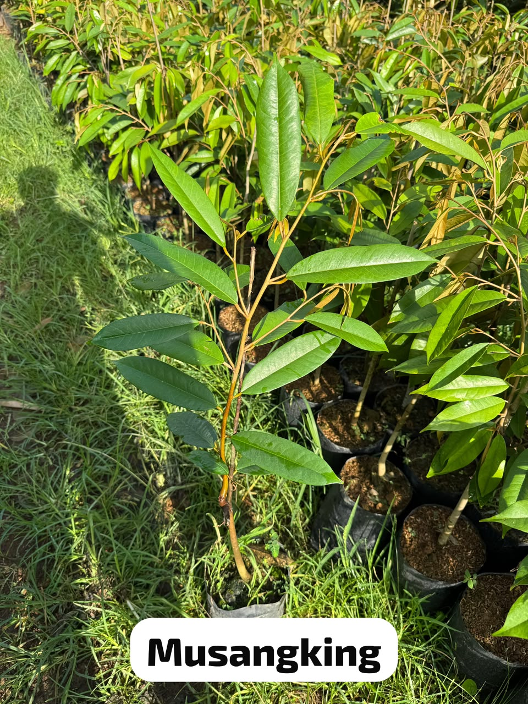
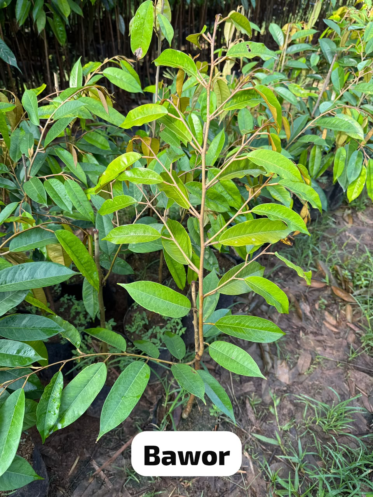
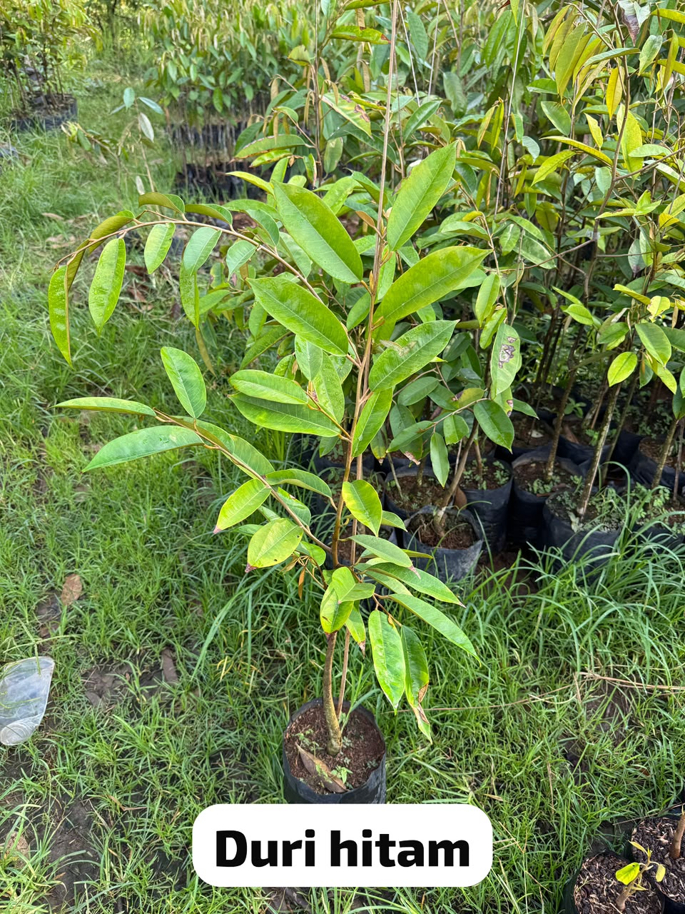
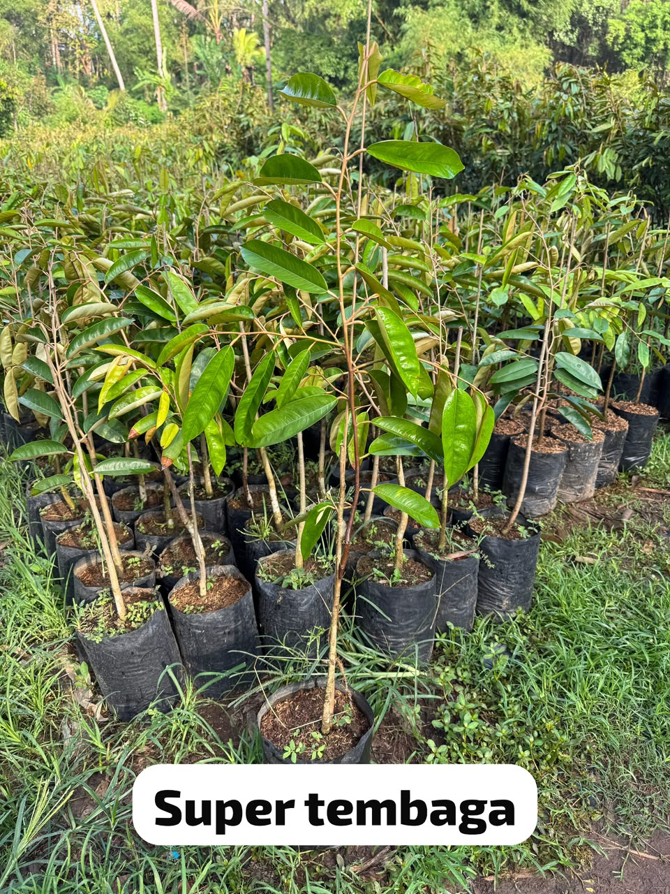

BIBIT MUSANG KINGDurian Musang King
Daging kuning pekat, manis legit dengan sedikit pahit.
Harga: Hubungi admin
Lihat Detail →Solusi bibit buah unggul untuk kebun impian Anda. Konsultasikan varietas, ukuran bibit, dan pengiriman bersama tim Sagara Agro.
Pilih varietas yang sesuai dengan rencana kebun Anda.

BIBIT MUSANG KINGDaging kuning pekat, manis legit dengan sedikit pahit.
Harga: Hubungi admin
Lihat Detail →
BIBIT DURIAN BAWOR
BIBIT DURI HITAMRasa creamy, manis legit, dan sensasi pahit khas.
Harga: Hubungi admin
Lihat Detail → BIBIT DURIAN MONTONG
BIBIT DURIAN MONTONG
BIBIT SUPER TEMBAGADaging kuning oranye dengan rasa manis tinggi dan legit.
Harga: Hubungi admin
Lihat Detail → BIBIT DURIAN MASMUAR
BIBIT DURIAN MASMUARRasa manis legit dengan sentuhan karamel dan tekstur lembut.
Harga: Hubungi admin
Lihat Detail → BIBIT CUMASI / NAMLUNG
BIBIT CUMASI / NAMLUNGRasa manis legit, pahit kuat, dan aroma sangat khas.
Harga: Hubungi admin
Lihat Detail → BIBIT TUPAI KING
BIBIT TUPAI KINGVarietas eksklusif dengan karakter rasa premium.
Harga: Hubungi admin
Lihat Detail →Harga, stok, dan pilihan tinggi bibit dapat berubah. Konfirmasi kepada admin sebelum memesan.
Estimasi waktu berbuah merupakan perkiraan dan dapat dipengaruhi kondisi bibit, lingkungan, serta perawatan tanaman. Tanyakan stok dan spesifikasi bibit aktual kepada admin.
Sagara Agro merupakan pusat pembibitan tanaman buah unggul yang berpengalaman sejak 2015. Kami menyediakan berbagai pilihan bibit durian, alpukat, dan tanaman buah lainnya dengan fokus pada kualitas genetik dan keberhasilan tanam.
Berlokasi di Krasak, Salaman, Magelang, kami mengelola kebun pembibitan seluas 3.000 m² dengan ribuan stok bibit siap tanam untuk kebutuhan pekarangan hingga perkebunan.
Diskusikan kebutuhan dan ketersediaan bibit dengan admin.
Konsultasikan varietas, jumlah, ukuran bibit, dan tujuan pengiriman untuk mendapatkan penawaran yang sesuai.
Tanya Paket Grosir →Foto kebun, bibit, proses pengemasan, dan ulasan pelanggan.
Testimoni asli ditambahkan setelah materi dan izin publikasi tersedia.
Konten perawatan dan budidaya akan ditambahkan di tahap berikutnya.
Kenali varietas, kondisi bibit, dan kebutuhan lokasi tanam sebelum menentukan pilihan.
Konsultasi dengan admin →Tanyakan stok, ukuran bibit, harga terbaru, dan pengiriman.